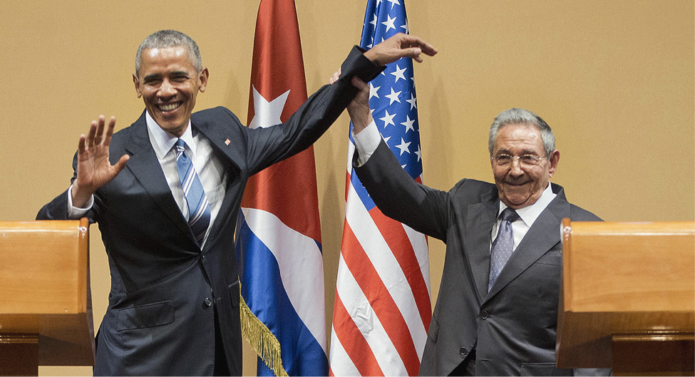

POTUS Visits Cuba for the First Time in 85 Years
By Jerry Shih
Cuban President Raúl Castro lifts up President Barack Obama's arm at the conclusion of their joint news conference at the Palace of the Revolution in Havana on Monday. SOURCE: Politico
On March 21, President Barak Obama visited Cuba, the first sitting president to do so in over 85 years. He was accompanied by the first lady and his daughters in addition to a large congressional delegation of both Republicans and Democrats. Over the two-day visit, the president met with President Raúl Castro to discuss the future of their diplomatic relations.
During a joint news conference, President Obama lauded the progress Cuba has made as a nation in education and health care, referring to Cuba’s free education and national health system. However, he also spoke against censorship and limits on freedom of expression, association, assembly, movement, and press enforced by Cuban law.
“We believe that freedom of speech and freedom of assembly and freedom of religion are not just American values, but are universal values,” Obama said in a joint press conference with Castro.
In addition to encouraging reform on civil rights, Obama expressed his wish for Cubans and Americans to take advantage of existing changes in trade policy to help create more economic opportunities for both nations.
“We have said that it is no longer a restriction on U.S. companies to invest in helping to build Internet and broadband infrastructure inside of Cuba,” Obama said. “It is not against U.S. law, as it's been interpreted by the administration. If we start seeing those kinds of commercial deals taking place and Cubans are benefitting from greater access to the Internet … that builds a constituency for ending the [trade] embargo.” Obama later spoke at an entrepreneurship panel discussion for young Cubans and met with Cuban civil society leaders, making the two-fold purpose of his visit very clear.
“We want to open up more opportunities for U.S. businesses and travelers to engage with Cuba, and we want the Cuban government to open up more opportunities for its people to benefit from that engagement," says National Security Adviser Ben Rhodes. The goal is for links and business between the Cuban and American people to “gain such momentum that there’s an inevitability to the opening that’s taking place and the increase in engagement that’s happening in our countries.” However, there are still obstacles to overcome before any progress that has been made can be secured. Specifically, the Obama administration is aiming to make the new diplomatic relations strong enough to last the scrutiny of future presidents.
“If there is not a meaningful and operational U.S. business presence in Cuba by the date he leaves office, then a future president will have little impediment towards making changes,” senior policy advisor John Kavulich explained at the U.S.-Cuba Trade and Economic Council. Otherwise, he added, a new president “will say, looking at the relationship, it all seems about Cuba making more money and giving us less of it.”
Since the restoration of diplomatic relations in July of 2015, U.S. companies have received approval to export more than $7 billion worth of goods and services over the next two years. It is unclear how many of those sales will be made due to the slow and uncertain pace of reform in Cuba. To accelerate this process, the Obama administration has urged Congress to lift the decades-long economic embargo, arguing that such a move would improve Cubans’ well being and human rights. But with Republican resistance in congress, the possibility of that happening seems unlikely.
GOP presidential candidates were quick to criticize the decision to visit Cuba. After Obama announced his intentions in February, former governor of Florida, Jeb Bush, condemned his decision on Twitter: “Appalling for @POTUS to legitimize the Castro regime with a visit before freedom for Cuban people.”
Florida Senator Marco Rubio, the son of Cuban immigrants wrote, “Rather than achieving several long-standing U.S. goals and national security interests, you have methodically squandered this opportunity, legitimizing the Castro regime and enriching it in the process.”
Ben Carson suggested waiting for a change in leadership. “At that point, you have a lot of leverage.”
The concern for legitimizing the Castro regime was shared by many dissident leaders. Even during the visit, dissidents were beaten, stripped, and threatened. Dissident leader Antonio Rodiles, who was himself beaten and arrested with his wife, told reporters that Obama’s visit had occasioned “a festival of repression.” At the same time, it seems that others believed some good still came of it.
In a televised speech to the Cuban people, with Castro in attendance, Obama stated his beliefs about the freedom of expression, assembly, protest, and religion.
“Every person should be equal under the law,” Obama said. “Citizens should be free to speak their mind without fear — to organize, and to criticize their government, and to protest peacefully, and that the rule of law should not include arbitrary detentions of people who exercise those rights. I believe that every person should have the freedom to practice their faith peacefully and publicly. And, yes, I believe voters should be able to choose their governments in free and democratic elections.” To Castro, he added, “I am also confident that you need not fear the different voices of the Cuban people — and their capacity to speak, and assemble, and vote for their leaders.”
A dissident leader known as Antunez told reporters over the phone, “Independent of the fact that I think the trip has been a big mistake, it was good that he urged the dictator to respect human rights. It was an important lesson for the dictator.”
Despite these criticisms, President Obama seems optimistic about the future. When asked about the progress made towards lifting the embargo and the concern of adjustments to the embargo being reversed by future presidents, he stated his belief that the embargo will eventually end. “The fact that we have such a large congressional delegation with Democrats and Republicans with us is an indication that there is growing interest inside of Congress for lifting the embargo.”
Later this year, U.S.-Cuba human rights dialogues will continue in Havana, Cuba.